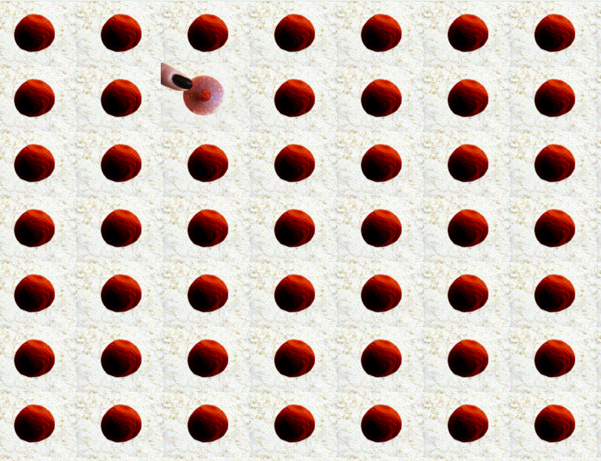

| Web Artist | Characteristics | Thumbnail Image |
|---|---|---|
| JODI | Graphically chaotic, unpredictable navigation, abstract imagery | |
| Shua Lea Cheang | Repetitive circular shapes, organized layout. |  |
| Scott Blake | Clean background, repeating barcode patterns. | |
| John Russell | Colorful, layered images, floral. | |
| Katherine Frazer | Floral collage, saturated colors. | |
| Nathaniel Stern | Human drawings, balance composition. | |